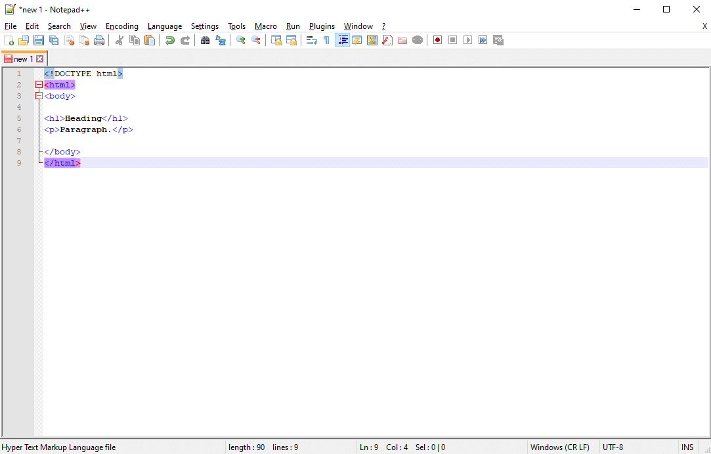
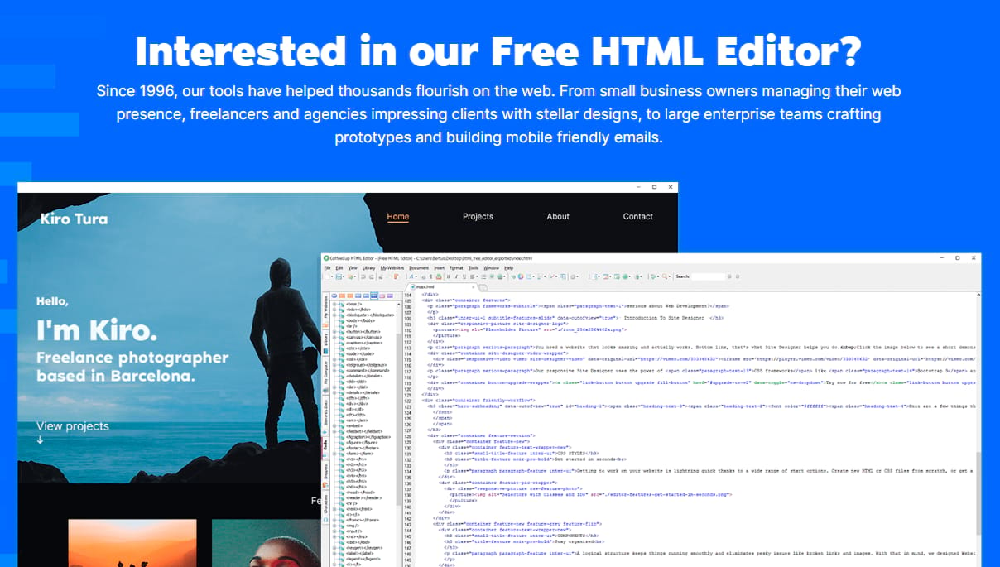

Les meilleurs éditeurs de texte HTML gratuits
Les meilleurs éditeurs de texte HTML gratuits
Les éditeurs de texte sont des programmes simples et ciblés qui fournissent une interface propre pour travailler avec le HTML. Beaucoup de développeurs les préfèrent à l’interface en direct d’un éditeur WYSIWYG, ou à l’interface encombrée et aux fonctionnalités inutiles d’un IDE. Les éditeurs de texte sont parfaitement optimisés pour leur simplicité et vous donnent un contrôle total sur votre travail.
Notepad++
Reconnu pour sa légèreté, Notepad++ est un éditeur de texte et de code pour Windows. C’est souvent le premier outil avec lequel un développeur travaillera, car il est très simple et pas difficile à apprendre, et pourtant il est fourni avec de nombreuses fonctionnalités pour vous faciliter la vie.
Notepad++ gère des dizaines de langues, mais il supporte HTML, CSS, PHP et JavaScript. Ainsi, il fonctionne avec tous les langages dont un développeur WordPress aura besoin. Et il a été activement mis à jour depuis sa sortie en 2003, donc vous savez qu’il va être maintenu de manière fiable pour les années à venir.
Le programme comprend la sauvegarde automatique, la recherche et le remplacement, la vue en écran partagé, la modification simultanée et beaucoup d’autres fonctions intéressantes comme la prise en charge d’extensions tierces. Notepad++ est idéal pour les débutants, mais il contient suffisamment de qualité pour durer toute votre carrière de développeur web.
Visual Studio Code
L’un des éditeurs de code les plus populaires, sinon le plus populaire, Visual Studio Code est la référence pour de nombreux développeurs malgré sa sortie relativement récente en 2015. Il est extrêmement robuste et personnalisable, avec une interface que vous pouvez personnaliser à votre goût, et des extensions pour ajouter encore plus de fonctionnalités.
L’éditeur supporte HTML, CSS, JavaScript et PHP, vous n’aurez donc jamais à changer d’outil. Et il utilise le système IntelliSense pour la coloration syntaxique et l’auto-complétion, en plus d’inclure le support du contrôle de version Git/Github et la fonctionnalité FTP.
N’oubliez pas de lire notre guide Git vs Github.
Enfin, VSC fonctionne avec Windows, Mac et Linux, donc presque tout le monde peut l’utiliser. Il y a beaucoup de fonctionnalités dans ce programme, donc il pourrait être un peu lourd pour les tout nouveaux développeurs. Mais apprenez à l’utiliser, et vous aurez presque tous les outils dont vous aurez besoin.
CoffeeCup Free Editor
Vous cherchez un outil dédié au HTML ? CoffeeCup Software a créé HTML Editor, un programme commercial pour les développeurs web, mais a également publié une version réduite qui est totalement gratuite d’utilisation.
Certaines fonctionnalités comme les connexions FTP illimitées, la validation HTML/CSS et le nettoyage de code ne sont disponibles qu’en version d’essai. Mais il est livré avec la personnalisation de l’interface utilisateur/la barre d’outils, la complétion du code et la prévisualisation HTML dans un navigateur simulé. Tout ce dont vous aurez besoin est là.
De plus, il fonctionne avec CSS et JavaScript, donc dans l’ensemble vous obtenez l’ensemble des outils de création de site Web.
Brackets
Vous aimez le design léger de Notepad++ mais vous voulez un programme spécifiquement axé sur le développement web ? Brackets est la solution parfaite. Il fonctionne sur Windows, Mac et Linux, et est livré avec juste la bonne quantité de fonctionnalités pour vous donner une grande expérience sans vous gêner.
L’éditeur HTML, JavaScript et CSS comprend un aperçu en direct, la prise en charge du préprocesseur, la mise en surbrillance et des extensions gratuites pour ajouter tout ce qui manque. Il a été construit avec le développement web en tête, donc vous savez que vous aurez tout ce dont vous aurez besoin pour créer dans WordPress
Brackets est un bon choix pour les développeurs qui aiment un espace de travail minimal et propre, non surchargé de fonctionnalités inutiles qu’ils n’utiliseront jamais.
Komodo Edit
ActiveState a créé Komodo IDE, un environnement de développement intégré qui vient avec des fonctionnalités avancées comme le débogage et les intégrations avec d’autres plateformes. Mais si vous voulez juste un éditeur HTML plus simple et plus facile à utiliser, essayez Komodo Edit. Il fonctionne sur la plupart des systèmes d’exploitation, y compris Windows, Mac, et diverses distributions de Linux.
L’éditeur est multilingue et fonctionne avec HTML, PHP et CSS. Vous pouvez entièrement personnaliser son apparence, et il possède des fonctions de saisie automatique, de multi-sélection et de suivi des modifications. C’est une solution simple et agréable, mais puissante.
Sublime Text
Lisse et sophistiqué, Sublime Text est un éditeur de code et de texte pour Windows, Linux et Mac. Il est livré avec 23 thèmes intégrés et une personnalisation totale sur l’interface, avec un support pour divers langages de balisage et de programmation.
Sublime Text vous permet de passer aux chaînes de caractères ou aux symboles, de définir diverses syntaxes, de mettre en évidence le code, de sélectionner plusieurs lignes et d’effectuer une édition fractionnée. Il garde également son interface propre grâce à une palette de commandes interrogeable, de sorte que vous n’ayez pas à vous occuper de fonctions peu utilisées. Si vous aimez votre interface de codage sans encombrement et totalement personnalisable, vous allez adorer Sublime Text. C’est certainement l’expérience la plus agréable (c’est mon choix personnel, d’ailleurs).